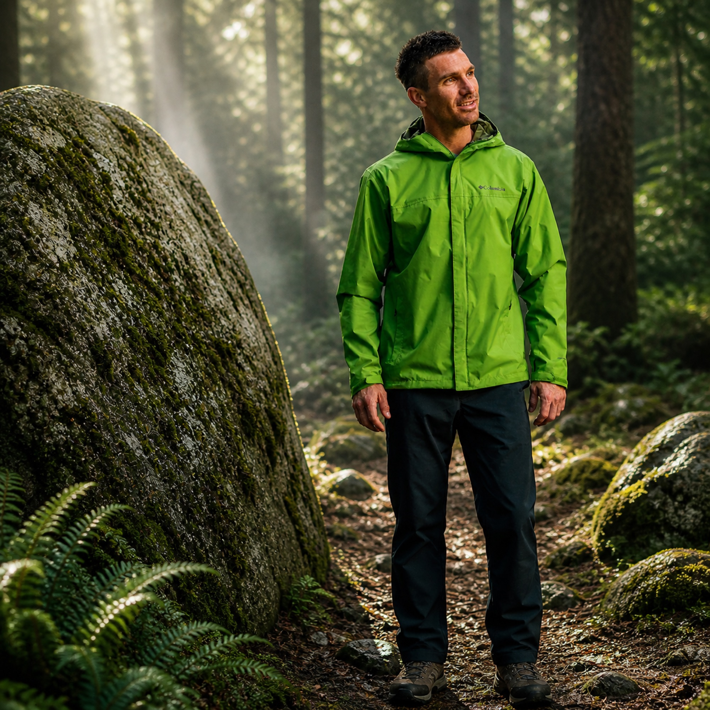

SLEEP
Bag and pad are one decision
A warm bag on a weak pad still loses. The pad handles the ground, the bag holds body heat, and the extra blanket adds margin after the foundation is right.
 By Chris Follin
By Chris FollinEDITORIAL
Once the temperature drops, weak links stop being theoretical. Cold-weather gear has to work as a system: ground insulation, a real bag, wind protection, hot food, usable light, condensation control, and heat that matches the campsite instead of wishful thinking.
Cold-weather gear does not need to be dramatic. It has to keep the predictable weak points from ruining the trip: cold ground, wind, dark camp chores, wet layers, battery sag, and the difference between passive warmth and real heat when the setup is vehicle-based.
Cold camp gets easier when you think in layers of heat loss and heat recovery. Stop the ground from stealing warmth, block wind, make hot food simple, then decide whether active heat is safe and worth the complexity.
SLEEP
A warm bag on a weak pad still loses. The pad handles the ground, the bag holds body heat, and the extra blanket adds margin after the foundation is right.
CAMP
A shell layer, reliable stove, and real lantern matter because cold evenings punish fumbling. Hot food, light, and wind control buy more comfort than another random blanket.
HEAT
Diesel, propane, and 12V heat all have limits. Think fuel, power, ventilation, exhaust, clearance, carbon monoxide risk, and battery draw before calling any heater a solution.

The main down-bag warmth anchor when desert nights turn into real cold-weather campouts.

The pad matters more than people think once the ground starts pulling the heat out of you.

The deeper vehicle-camp answer when cold-weather comfort needs to be repeatable.

A boring but useful wind-and-weather layer when camp stops being pleasant in a hurry.

Hot drinks and fast hot food matter way more when the evening gets cold and windy.

Cold camp routines are easier when you are not fumbling in the dark with weak lighting.
The weak pages in this cluster all pointed at the same truth: blankets and portable heat can help, but none of them replace the boring foundation of an insulated pad, a warm bag, wind control, ventilation, and a realistic power or fuel plan.
PROPANE HEAT
They make more sense for ventilated drive-in camp, early coffee, and taking the edge off a cold shelter than as a sleep plan. Treat combustion, clearance, and airflow as the whole point, not fine print.
12V WARMTH
They are useful for passengers, cold starts, and vehicle-based warmups. They are not a campsite heater, and they only make sense when the battery draw is part of the plan.
WOOL BACKUP
It is too bulky to pretend it is a backpacking answer, but it keeps earning small jobs around a truck camp: lap warmth, seat cover, emergency layer, and backup sleep-system margin.
PACKABLE LAYER
The lighter blanket is for shoulder-season hangs, hammocks, kids, and gap-filling over a sleep kit. It helps most when you already have the core sleep setup handled.
Cold-weather camping has a way of exposing the weakest link fast. Usually it is not some dramatic disaster. It is one boring failure that drags the whole night down: cold ground, weak layers, bad lighting, no easy hot food, or a heat setup that sounded better than it actually works.
GROUND LOSS
The sleeping bag gets all the attention, but the pad is often the first real failure point. If the ground is cold and your pad is weak, the bag has to work harder than it should.
EVENING ROUTINE
Once the temperature drops, every little task gets harder. That is why I care about hot water, lighting, a shell layer, and heat options that match the style of camp instead of pretending one blanket solves everything.
WIND
A marginal jacket or stove becomes a real problem once the air starts moving. The camps that feel great in still air can get mean very quickly if the wind is wrong.
I would not try to solve cold camp by brute-force buying the biggest sleeping bag and calling it good. The whole system matters, and the order matters too.
START HERE
Better bag, insulated pad, extra blanket, and a site that is not fighting the forecast. If you sleep warm enough, the rest of camp is much easier to enjoy.
THEN THIS
A hot drink and decent food are not fluff once it is cold. Lighting matters because the margin for fumbling gets smaller, and the jacket is as much about wind management as rain.
PAIR IT RIGHT
If the site is exposed, your gear needs to cover more mistakes. If camp is sheltered, simpler choices may work. Cold-weather success is partly gear and partly picking the right camp.